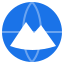

About, licences and terms of use
Last updated: 18 October 2026
About this project
Open 3D Terrain Map is a hobby, non-commercial visualisation of open map and elevation data. The source code is available on GitHub under the MIT licence. The map data and map tiles are not covered by the MIT licence; they belong to the providers listed below and are subject to their licences and terms.
The application is provided “as is”, without any warranty.
Disclaimer and permitted use
- Personal, non-commercial use only, with low traffic. Several providers (Esri, OpenStreetMap, OpenRailwayMap and other volunteer-run servers) allow free use only on these conditions.
- Not for navigation or safety-critical decisions. Trails, ski pistes, sea marks, elevation, contour lines and buildings may be outdated, incomplete or inaccurate. Do not rely on this map in the mountains, at sea or anywhere your safety depends on it.
- No bulk downloading, scraping or automated access to the map tiles or the search through this application. These are the providers’ rules.
- No guaranteed availability. The application depends on free third-party services that may change, limit or stop at any time.
- The status of Esri layers (aerial imagery, roads, names and borders) used without an ArcGIS account is not explicitly defined in Esri’s published terms; they are shown here for personal, non-commercial preview only and may be removed at Esri’s request.
Privacy
The application itself sets no cookies and has no server of its own. To know roughly how many people use it, it counts visits with Cloudflare Web Analytics, which uses no cookies and no fingerprinting and does not track you across sites; Cloudflare receives the page address, the referring page, the browser and device type and the country derived from your IP address. To show the map your browser connects directly to the services listed below; each of them receives your IP address and learns which map area you are viewing. Search queries are sent to OpenStreetMap Nominatim. The location from the “find my location” button is used only in your browser to centre the map and is not sent anywhere by the application.
Contacted hosts: open3dterrainmap.org (GitHub Pages hosting), static.cloudflareinsights.com and cloudflareinsights.com (Cloudflare Web Analytics), unpkg.com, fonts.googleapis.com, fonts.gstatic.com, demotiles.maplibre.org, tiles.mapterhorn.com, tiles.openfreemap.org, tile.openstreetmap.org, nominatim.openstreetmap.org, server.arcgisonline.com, tile.opentopomap.org, tiles.openrailwaymap.org, tile.waymarkedtrails.org, tile-cyclosm.openstreetmap.fr, tiles.opensnowmap.org, tiles.openseamap.org.
Map data and services
| Provider | Used for | Licence / terms | Attribution |
|---|---|---|---|
| OpenStreetMap | Base map “OpenStreetMap” | Data: ODbL 1.0; tiles: CC BY-SA 2.0. Tile usage policy | © OpenStreetMap contributors |
| Nominatim (OpenStreetMap) | Search | Results: ODbL 1.0. Usage policy (max 1 request/s, no autocomplete) | © OpenStreetMap contributors |
| Mapterhorn | 3D terrain, hillshade, contour lines | Built from 151 open elevation datasets, mostly CC BY 4.0, open government licences and public domain (in Poland: GUGiK, open government data). Full list of sources and licences | © Mapterhorn and its data sources |
| OpenFreeMap | 3D buildings | OpenMapTiles schema, OpenStreetMap data (ODbL 1.0). Free, commercial use allowed. | OpenFreeMap © OpenMapTiles Data from OpenStreetMap |
| Esri World Imagery | Base map “Aerial imagery” | Esri Master License Agreement; see the disclaimer above | Source: Esri, Vantor, Earthstar Geographics, and the GIS User Community |
| Esri World Transportation, World Boundaries and Places | Overlays “Roads”, “Place names and borders” | Esri Master License Agreement; see the disclaimer above | Esri, HERE, Garmin, © OpenStreetMap contributors, and the GIS user community |
| OpenTopoMap | Base map “OpenTopoMap” | CC BY-SA | Map data: © OpenStreetMap contributors, SRTM | Map style: © OpenTopoMap (CC-BY-SA) |
| OpenRailwayMap | Overlay “Railways” (4 styles) | Tiles: CC BY-SA 2.0; data: ODbL 1.0. Free only for small, public, non-commercial apps. Terms | Data © OpenStreetMap contributors, Style: CC-BY-SA 2.0 OpenRailwayMap |
| CyclOSM (tiles hosted by OpenStreetMap France) | Overlay “Cycle lanes and paths” | Tiles: CC BY-SA 2.0; data: ODbL 1.0 | CyclOSM, © OpenStreetMap contributors |
| Waymarked Trails | Overlays “Hiking trails”, “Signposted cycling routes”, “Mountain bike trails” | Data: ODbL 1.0 (OpenStreetMap); tile licence not stated publicly | © Waymarked Trails, © OpenStreetMap contributors |
| OpenSnowMap | Overlay “Ski pistes” | Data: ODbL 1.0 (OpenStreetMap); tile licence not stated publicly | © OpenSnowMap, © OpenStreetMap contributors |
| OpenSeaMap | Overlay “Sea marks” | CC BY-SA 2.0 | © OpenSeaMap contributors |
Software
- MapLibre GL JS 6.12.0 – BSD 3-Clause (loaded from unpkg.com)
- maplibre-contour 0.1.1 – BSD 3-Clause (loaded from unpkg.com)
- Material Symbols icons – Apache 2.0 (loaded from Google Fonts)
- Noto Sans glyphs for contour labels – SIL Open Font License 1.1 (from demotiles.maplibre.org)
Contact and corrections
- Problems with this application: GitHub Issues
- Errors in the map data (roads, trails, names, buildings): report or fix them in OpenStreetMap